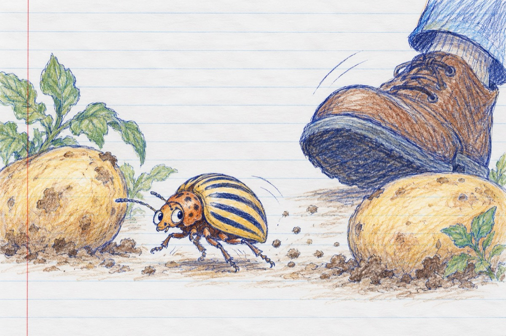

Gândacul de Colorado
Un gândac, doi cartofi
Cineva mi-a dat în ochi
Și-acum nu mai văd cartoful
Și m-apucă pe loc oful
Eu care eram un "bravo"
La mine în Colorado
Of, of, of și-un cartof
Peste mine-i un pantof
Și-n pantof două picioare
Ce m-apasă de mă doare
Și mă doare și gurița
Trebuie să-mi iau tălpășița
Să pleciar în Colorado
La cei ce m-au dat plocon
Precum fac americanii
Fără să zică "pardon"!
Of, of, of, doi pantofi
Să-i las fără de cartofi
Să mănânce și ei zdrele
Culese de pe podele
Și răbdări bine prăjite
De doi gândaci pregătite!
Vasile Groza